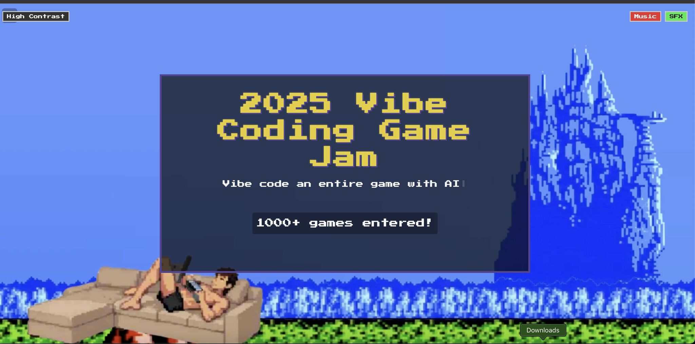

החודש יותר מ-1,000 מפתחים ויוצרים מרחבי העולם התכנסו לתחרות יוצאת דופן: Vibe Coding Game Jam
פורסם במקור ב LinkedIn
החודש יותר מ-1,000 מפתחים ויוצרים מרחבי העולם התכנסו לתחרות יוצאת דופן: Vibe Coding Game Jam
המשימה: ליצור משחק אינטרנטי, חינמי, ש-80% ממנו נוצר בעזרת בינה מלאכותית - כולל קוד, גרפיקה וסאונד.
מאחורי היוזמה עומד היזם ההולנדי פיטר לוולס (@levelsio), הידוע בפרויקטים כמו Nomad List ו-Remote OK, ובתור זה שבנה משחק מטוסים מרובה משתתפים בדפדפן (Fly pieter) שנהיה ויראלי (ואפילו מכר פרסומות בתוכו). הוא כמובן פיתח את המשחק ב-Vibe coding וכמעט בלי לכתוב קוד בעצמו.
התחרות נתמכה על ידי חברות חדשניות כמו Bolt, Coderabbit ו-LambdaAPI
והפרסים בתחרות עמדו על:
🏆 10 אלף דולר למקום הראשון, 5 אלף לשני ו-2500 דולר לשלישי.
והזוכים הם:
🥇 The Great Taxi Assignment מאת @tomasbencko – סימולציה בסגנון GTA של נהג מונית בעולם וירטואלי.
🥈 Vibeware מאת @mattgordonxyz - משחק עם עיצוב ייחודי וחוויית משתמש מרתקת שבו אתה ״נולד״ בתור רובוט AI ולומד להכיר את העולם (קצת לא ברור האמת).
🥉 Vector Tango מאת @scobelverse - משחק אסטרטגיה של מגדל פיקוח עם גרפיקה מרהיבה.
בנוסף, @lukemaj_ זכה בפרס על יצירת אתר התחרות, שהפך לחוויה אינטראקטיבית בפני עצמה.
התחרות הזו מדגישה את הפוטנציאל האדיר שבשילוב בין יצירתיות אנושית וכלים מבוססי AI. היא מראה כיצד ניתן לחדש, לשתף פעולה וליצור חוויות משחק מרתקות בזמן קצר ובאמצעים נגישים.
אתר התחרות: jam.pieter.com
levelsio בטוויטר: twitter.com/levelsio
אם אתם עוסקים בפיתוח משחקים, בינה מלאכותית או פשוט מחפשים השראה - שווה לבדוק את הפרויקטים שיצאו מהתחרות הזו.
